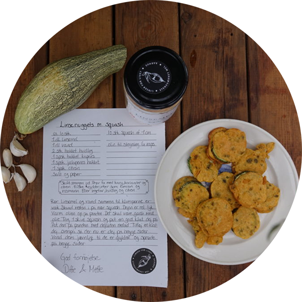
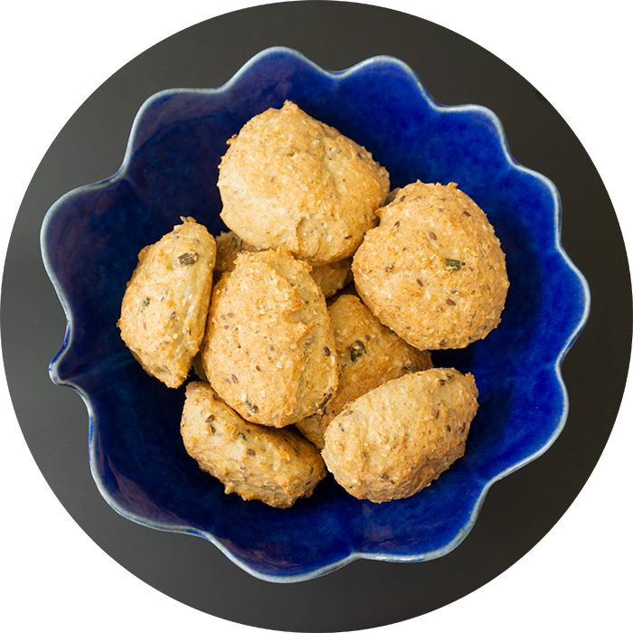
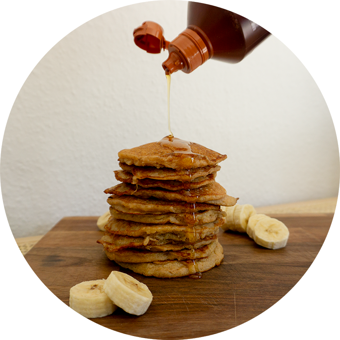

☰
Hjem
Menu
Kurser og arrangementer
Opskrifter
Om Dittes Verden
Kontakt
Opskrifter
Varme retter
Grøntsagsdeller med linsemel
Grøntsagsomelet med linsemel
Linsenuggets med squash
Madvafler med linsemel
Madpandekager med linsemel
Pizzadej med linsemel

Bagværk
Squashboller med linsemel
Glutenfri boller med linsemel
Knækbrød med linsemel

Snacks og søde sager
Fedtebrød med linsemel
Jødekager med linsemel
Bananpandekager med linsemel
Søde vafler med linsemel
